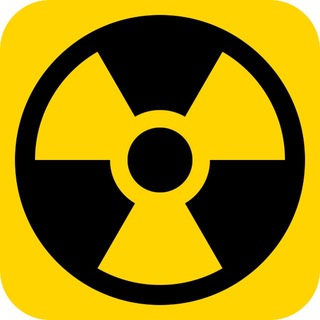
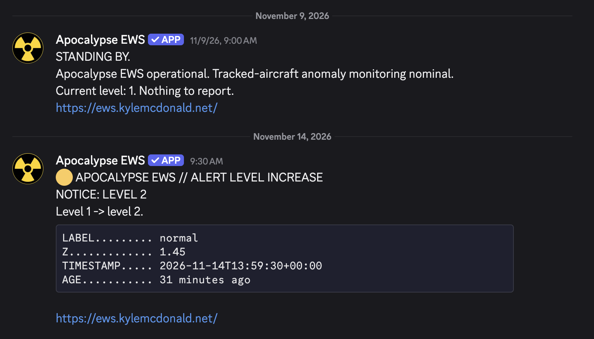
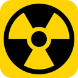

tracked-aircraft anomalies / rolling 24h / every level transition announced

Free Discord alerts from the Apocalypse Early Warning System. Every level change, in server channels or DMs.
/subscribe, or @-mention the bot
with subscribe. The bot must be installed to that server;
a personal install delivers by DM only.
subscribe. No mention
needed.
The server invite requests View Channels and Send Messages, not Administrator. No privileged Message Content access is requested. Slash commands, DMs, and direct @mentions still work.

Example: status update followed by an emergency-level increase from 1 to 2.

/subscribe [channel]/unsubscribe/status/help@-mention the bot with the same word — same effect. In a DM, just send the word.
The upstream tracks unusual private-jet activity over a rolling 24-hour window and assigns an emergency level from 1 to 5. This bot checks every 30 minutes and reports changes in either direction. Occasional service messages and reminders are separate from alerts.
No. This free, independent bot relays aircraft-activity data. It does not predict disasters or replace official emergency guidance. Screenshots are examples, not live readings.
Run /unsubscribe in each subscribed channel or DM, or send
unsubscribe to the bot in a DM. You can also remove the app from
Discord. See the terms of use and
privacy policy.
2 ↑ Notice. Emergency level 2. 3 ↑ ELEVATED. Emergency level 3. 4 ↑ WARNING. Emergency level 4. 5 ↑ ATTENTION. EMERGENCY LEVEL 5. ↓ Stand-down. Emergency level returned to N.
Each transition message also carries the upstream's text label, the
z-score, and an asOf timestamp. On a real level-5
event you'll additionally receive the full incident payload (title, link,
pubDate) from the upstream RSS feed.
ATTENTION. EMERGENCY LEVEL 5.
{title}
{pubDate}
{link}
Source feed: rss.xml · Telegram channel: @apocalypse_ews.
Commands, DMs, and direct @mentions are logged for operation and troubleshooting. Unsubscribing stops notifications; it does not erase past records.